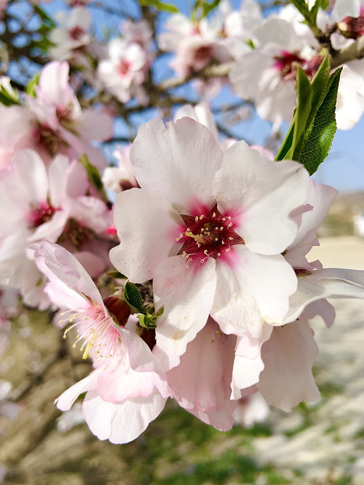

Almond Blossom
Botanical Name:
Prunus dulcis
Family:
Rosaceae
Native Region:
Middle East, South Asia
Significance:
Source of healthy fats and Vitamin E.
Uses:
Eaten raw, almond milk, used in skincare.
BREIF ☰
×
The fruit of the almond is a drupe, consisting of an outer hull and a hard shell with the seed, which is not a true nut, inside. This is the edible part of the almond tree, which is widely consumed all over the world in the form of raw nuts, roasted or salted snacks and even processed to synthesize almond flour and almond oil, to be used in cooking and cosmetic purposes.
Almonds also portray an impressive nutritional profile, being low on sodium and cholesterol, fostering heart health and serving as a natural solution for weight loss, hair fall and many other common health concerns.
Calories 579
Total Fat 64 %
Saturated Fat 19 %
Total Carbohydrate 8 %
Dietary Fiber 46 %
Sugar 10%
Protein 42 %
Micronutrients:
Calcium 21 %
Iron 21 %
Potassium 16 %
Copper 115 %
Magnesium 68 %
Manganese 95 %
Phosphorus 69 %
Potassium 16 %
Selenium 7 %
Zinc 28 %